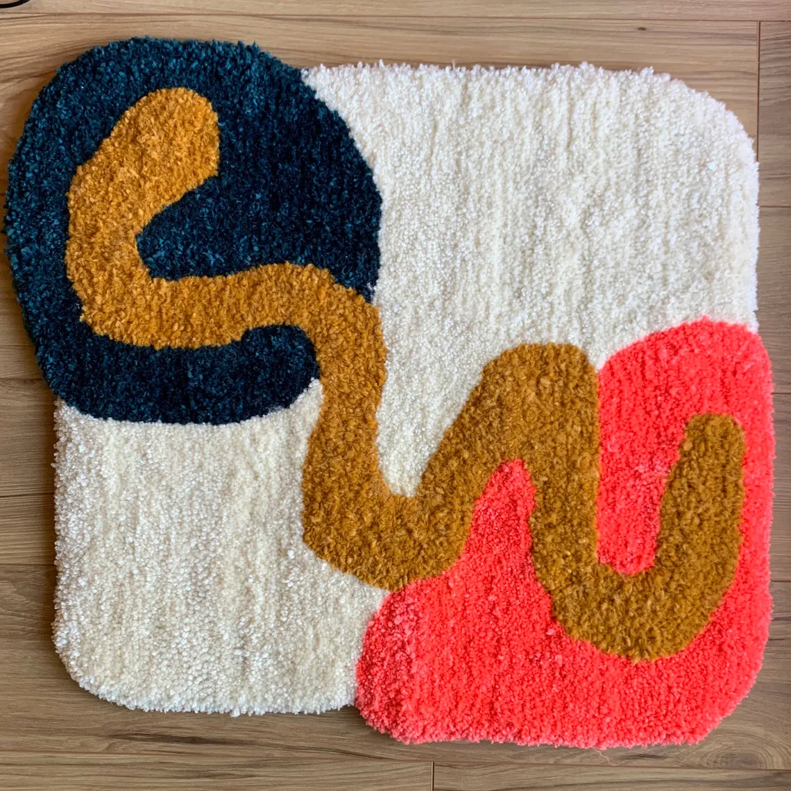

Commonly asked questions
At our Tufting Spot, your saisfaction is our top priority!
Our FAQ page is designed to help answer any questions you may
have about our tufting store.
Our team is available to answer any questions you may have about
our products, pricing, delivery options, and other services.
If you can't find the answer to your query on our FAQ page,
please don't hesitate to contact us directly.
We look forward to helping you find the perfect tufting product
for your home.
Q: How much is a custom made rug?
A: For a custom made rug, you would have to first contact us
about the design and dimensions for us to give an approximate price.
After that, a first payment is required for us to start the production.
When the rug is finised, the full payment is required for us to deliver it.
Q: What is the return policy?
A: For a custom made rug, as the rug is made specificly for you,
you cannot return it. If its our own design then you ship it back to us, and
we will send you back your money, after we deduct the shipping.
Q: How do I care for my tufted product?
In general, it's best to avoid using harsh chemicals or abrasive cleaners on your
tufted product, as this can damage the fibers and affect the texture and appearance of the surface.
For routine cleaning, vacuuming with a soft brush attachment is usually sufficient to remove dirt and
dust. If your tufted product has any stains or spills, it's important to address them promptly to
prevent
them from setting in.
Q: How do I order a personalised rug?
A: For a custom made rug, you have to contact us through our
contact page. Give a detailed description of the rug and measures you
want, and we will contact you back as soon as possible.